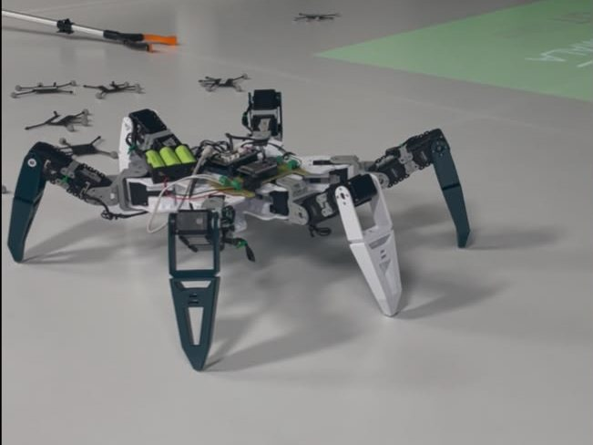
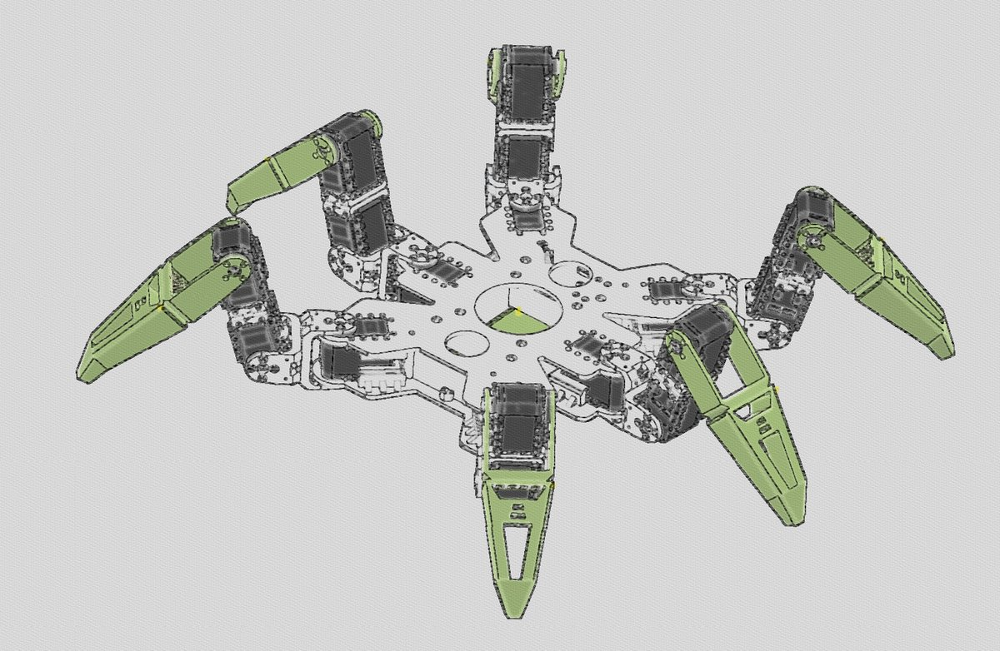

HexaPod
Author — mechanical design, kinematics, firmware, control pipeline
An eighteen-degree-of-freedom walking robot built end to end as my thesis project. Each of the six legs has three joints, so every step is a coordinated solution of the inverse kinematics for three limbs at once while the other three hold the body up. A hexapod is statically stable — it never has to catch itself — which makes it the right platform for slow, deliberate work on ground a wheeled robot cannot cross.
The control path runs from a MATLAB model down to the joints: analytic inverse kinematics generate the foot trajectories, an ESP32 carries them over Wi-Fi as TCP/JSON packets, and an OpenCM9.04 board translates them into position commands for the servo chain. Getting that path stable meant resolving a core conflict in the Bluepad32 stack, remapping servo IDs, fabricating a custom UART board to make the two controllers talk cleanly, and tuning gait timing until the body stopped fighting its own legs.
The simulation and the hardware share one gait model, so a change to the tripod timing in MATLAB is the same change the robot walks with. Current work extends that model from straight-line walking to in-place rotation.
| Configuration | 6 legs × 3 DOF — 18 joints |
|---|---|
| Actuation | 18 × Dynamixel AX-12A, daisy-chained |
| Controllers | OpenCM9.04 (servo bus) + ESP32 (network bridge) |
| Link | TCP/JSON over Wi-Fi; custom UART interface PCB |
| Gait | Alternating tripod; straight walk + in-place rotation |
| Power | Lithium pack with BMS and matched charger |
| Simulation | MATLAB, Peter Corke Robotics Toolbox |

